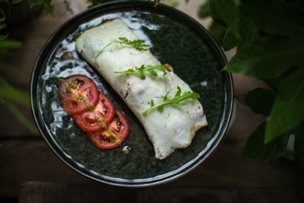

Перекус 2
Белковый омлет с овощами
122.91 ккал 8.43 белки 8.93 жиры 2.82 углеводы
Ингредиенты
❶ Яйцо куриное (65 гр.) ❷ Белок куриного яйца (65 гр.) ❸ Помидор (35 гр.) ❹ Петрушка (11 гр.) ❺ Укроп (11 гр.) ❻ Масло топленое (5 гр.)
Инструкция
1. Яйцо и белки взбить, слегка посолить. 2. На сковороде на топленом масле поджарить сначала овощи или зелень, потом влить яичную смесь. 3. Жарить под крышкой на медленном огне до готовности.